Dashboard

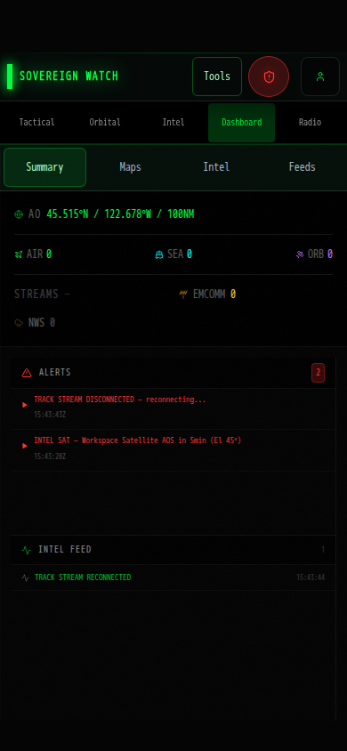
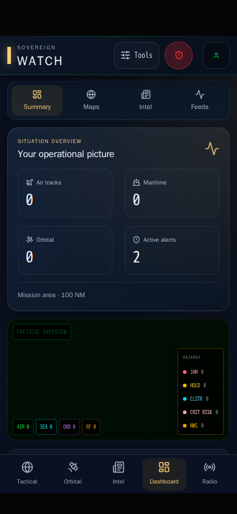
Identical isolated API fixtures, blank remote map styles, and fallback fonts are used to compare layout and visual hierarchy. These screenshots do not measure live map imagery quality or device frame rates. Phone screenshots use a 390 × 844 viewport with simulated iOS safe areas; desktop uses 1440 × 900.
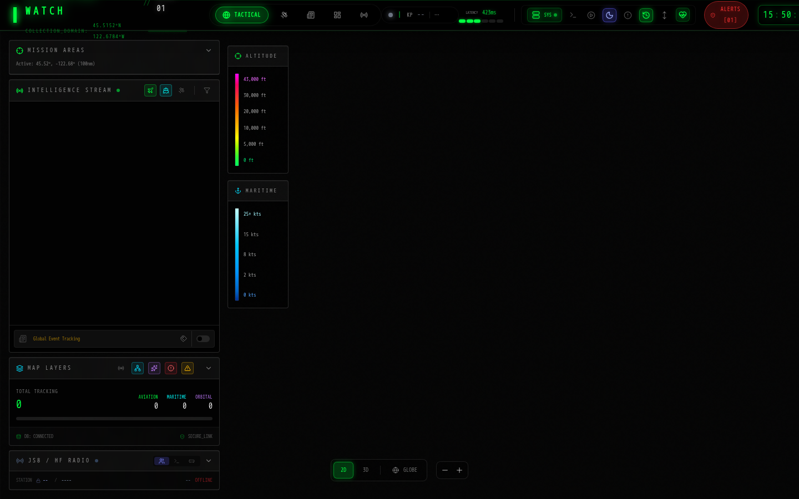
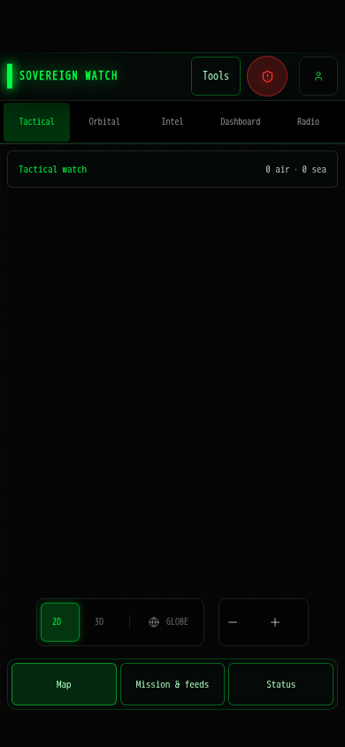
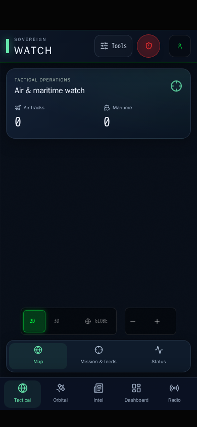
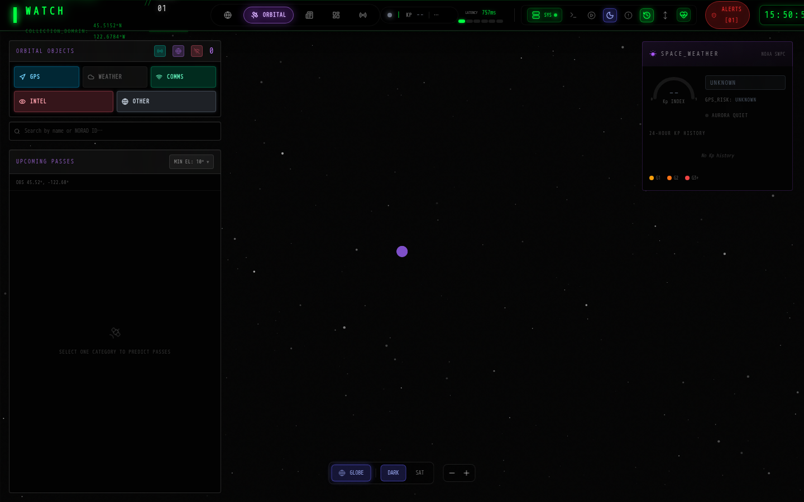
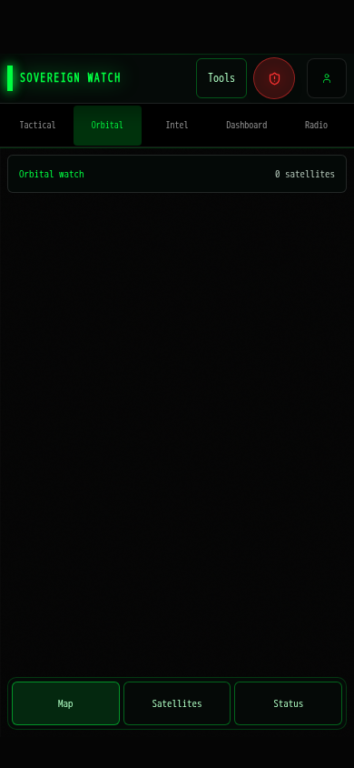
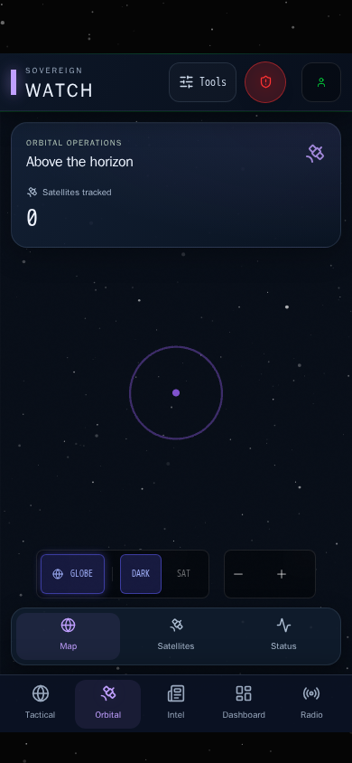
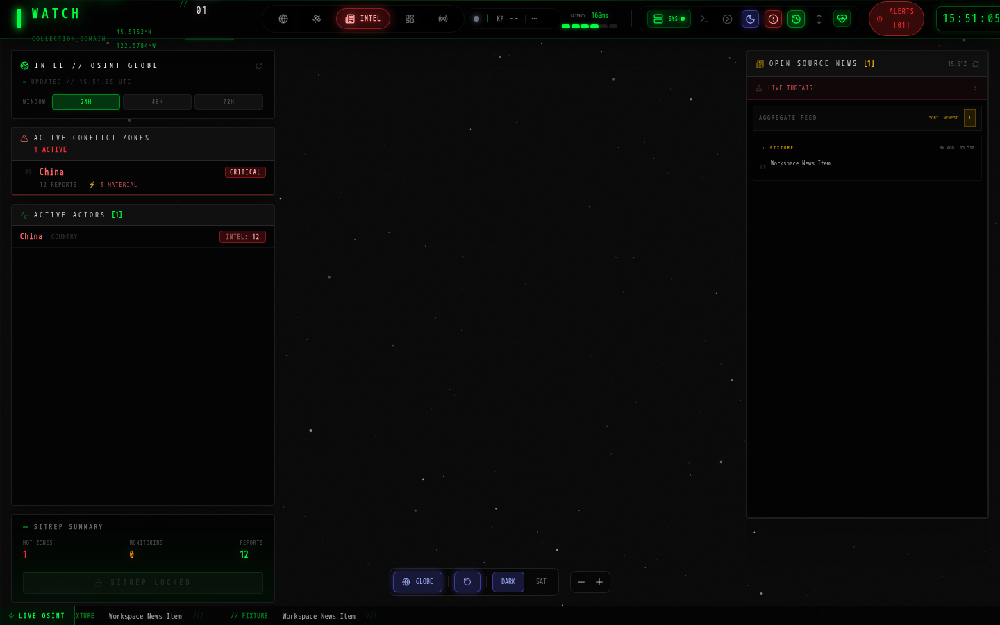
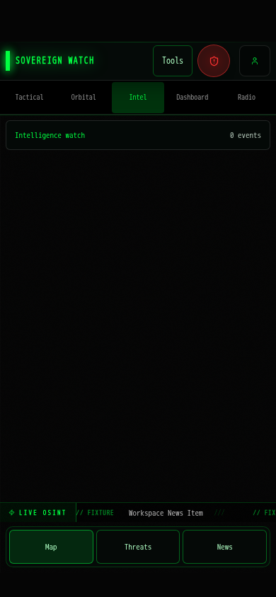
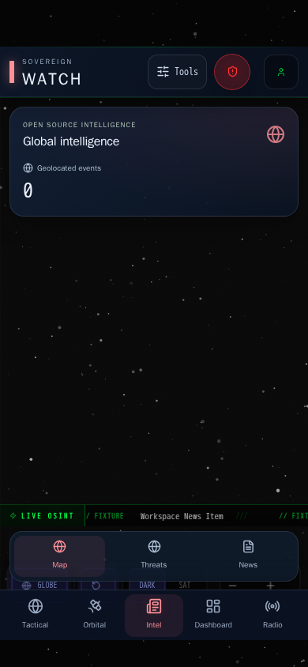



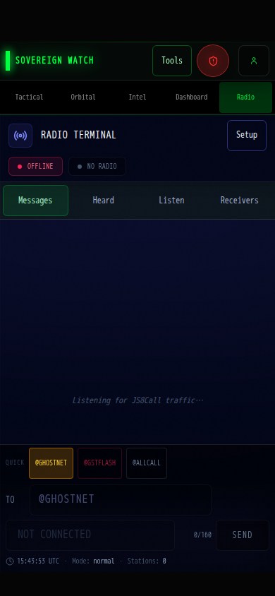
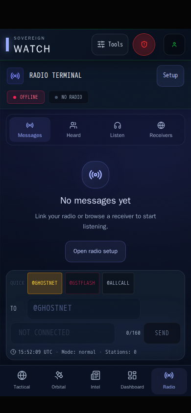